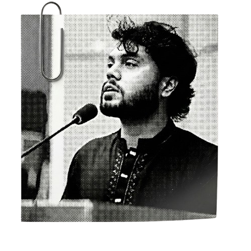

Hi.....! 👋
Which notes are you looking for today?
Mid Term
Topics 1-9
Final Term
Upcoming...

If this small effort brings you even a little benefit, please keep Hadi bhai in your prayers.
As I was completing this work, our country lost not just a man, but a fearless voice—a voice that dared to speak when silence was easier.
📘 Mid Term Topics
A Note on Legibility
My handwriting has its own unique "font" which might occasionally be tricky to decipher. 😅 If you find any word unclear:
- Step 1: Take a screenshot and ask ChatGPT to transcribe it (it works wonders!).
- Step 2: If you are still stuck, you can WhatsApp me at 01701949270.
*Please use Step 2 only if absolutely necessary. Happy studying!
📚 Extra Resources
Mid Question Solves
➔
Previous Mid Questions
▼
Click on a topic to open the PDF note in a new tab.